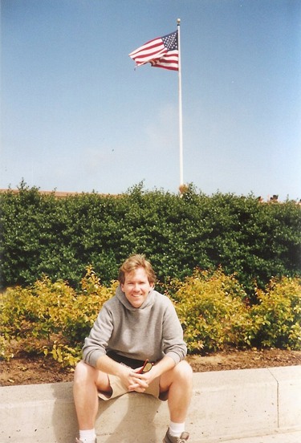
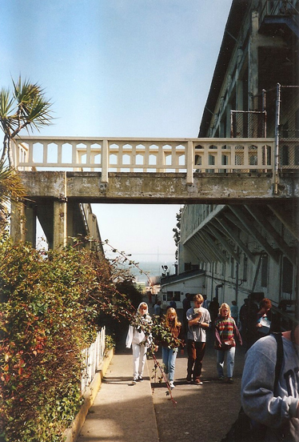
Alcatraz Island is located in San Francisco Bay, 1.25 miles offshore. The small island was developed with facilities for a lighthouse, a military fortification, a military prison and a federal prison from 1934 until 1963.
Said to be the safest prison in the world because of its isolation from the outside by the cold, strong, tremendous currents of the waters of San Francisco Bay, Alcatraz was used to house soldiers who were guilty of crimes as early as 1859. By 1861, the fort was the military prison for the Department of the Pacific and housed Civil War prisoners of war.
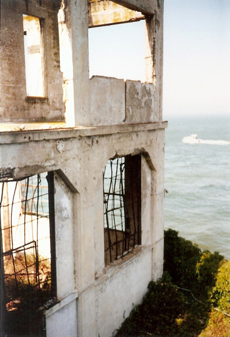
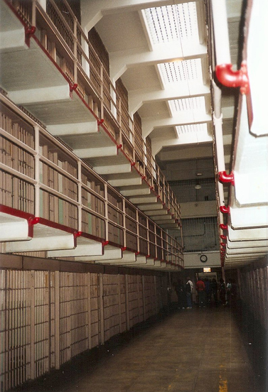
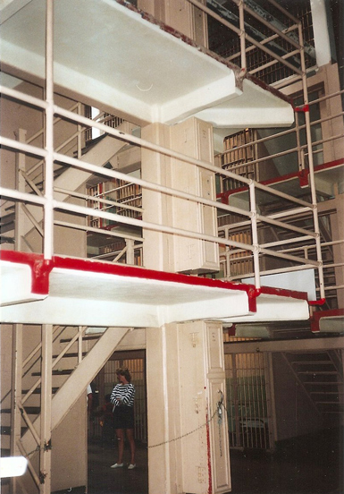
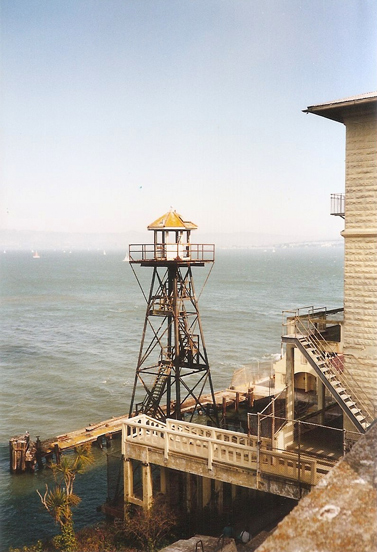
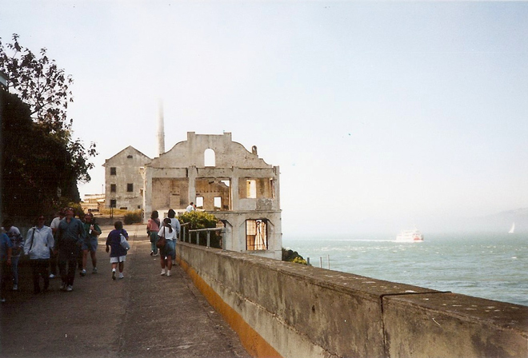
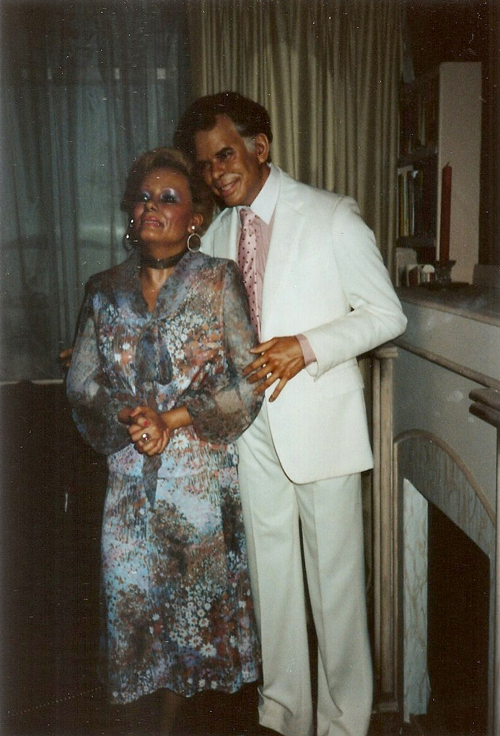
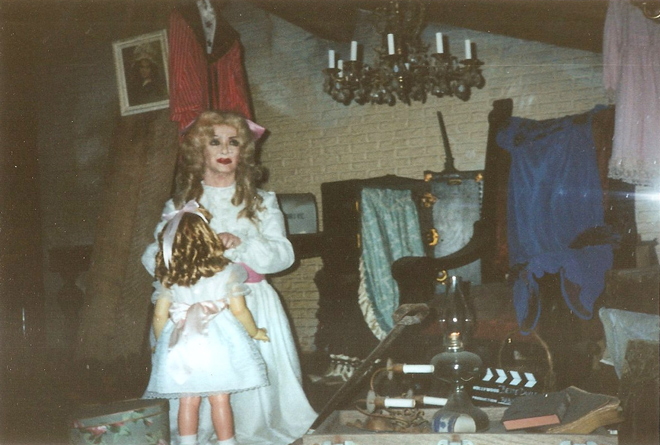
We then drove out to Point Reyes where we saw Lipnosky's Dacha at Tomales Bay (thanks, Tom for the reminder)!
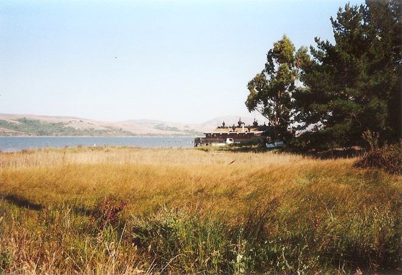
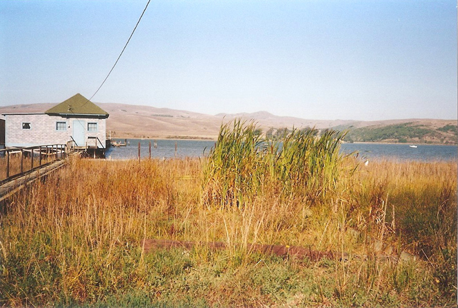